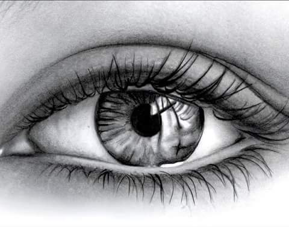

El egresado de la carrera de Tecnico en Diseño Asistido por Computadora , deberá ser una persona competente capaz de participar en el proceso de diseño, con una visión integradora mediante la aplicación de conocimientos y habilidades en el manejo de los recursos y el uso de las tecnologías modernas para la solución de problemas y el diseño:

HABILIDADES:
1.Teber iniciativa.
2.Habilidades artisticas.
3.Destrezas manuales.
4.Dispocision para el trabajo colaborativo.
5.Ser emprendedor.
CONOCIMIENTOS:
1.Elaborar representaciones graficas.
2.Realizar fotografias y aplicaciones vectoriales.
3.Diseñar envases, embalaje y etiqueta de producto.
4.Desarrollar la publicidad de un producto.
5.Aplicar las herramientas de diseño en el sector productivo.